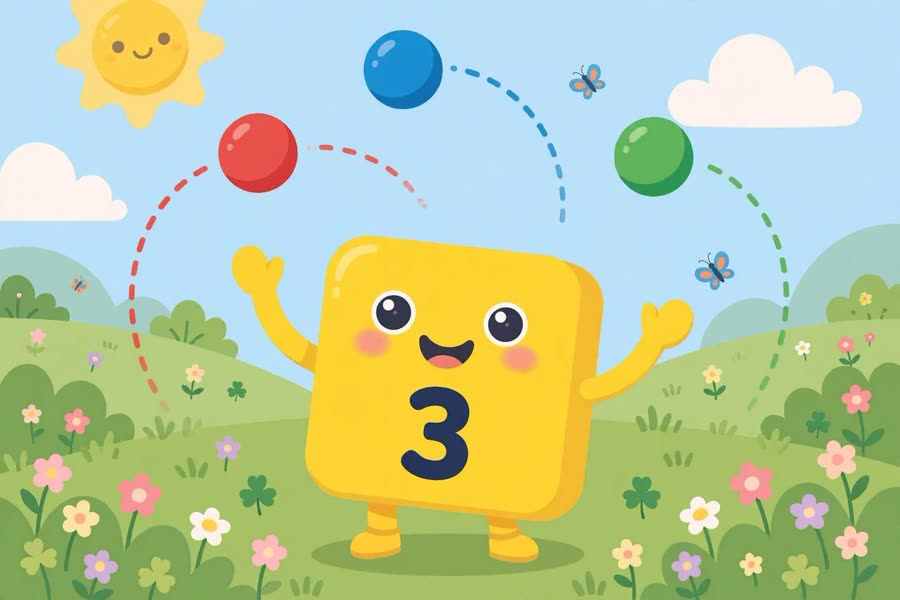
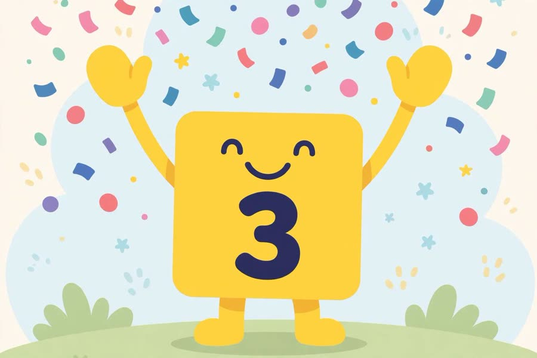

📖 剧情简介
三号登场！她是杂耍高手：三个球，一、二、三！
Three arrives! She's a juggling star: three balls — one, two, three!
🎭 角色
三号 Three
（数字乐园，三号抛着球出场 / Numberland, Three arrives juggling）
3
Three三号
Hello! I'm Three!
你好！我是三号！
3
Three三号
I have three blocks! One, two, three!
我有三个方块！一、二、三！
3
Three三号
Watch me juggle! One ball, two balls, three balls!
看我杂耍！一个球、两个球、三个球！

Watch me juggle! One ball, two balls, three balls!
（三号抛起三个球 / Three juggles three balls）
3
Three三号
Three is more than two!
三比二多！
3
Three三号
🎵 Three, three, jolly Three!
🎵 三，三，快乐的三！
3
Three三号
🎵 Juggling high for you and me!
🎵 为你为我抛得高！
3
Three三号
Three cheers! Hip, hip, hooray!
欢呼三声！嘿、嘿、万岁！

Three cheers! Hip, hip, hooray!
3
Three三号
One, two, three — catch!
一、二、三——接住！
3
Three三号
Three's a crowd, and I love crowds!
三人成群，我爱热闹！